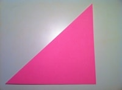
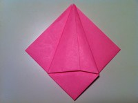

How to make an easy origami tulip ?
This origami tulip is a classic. I still remember my elementary teacher showing the class how to make one, and everyone was fascinated by it. The coolest part was when you had to blow into it and form the petals. It was very cool to see someone take a piece of paper and transform it into something beauitful I can understand why many teachers would want to teach their students how to make the origami tulip. It's insanely fun to fold and it's also pretty easy. Their are actually two parts to the tulip, the flower and the stem. I also provide instructions on how to fold the stem, but if you're lazy, you can simply roll up a piece of paper into a very thin scroll or use a penci.
STEP 1:
Start with a square piece of origami paper with white side up.
STEP 2:
Fold the upper left corner to the lower right corner, then unfold.
STEP 3:
Fold the upper right corner to the lower left corner, then unfold.

STEP 4:
Fold the top half backwards, then unfold.
STEP 5:
Poke the center of the paper to make it pop in.
STEP 6:
Bring the left and right creases to the center and the paper should collapse into a triangle.

STEP 7:
Fold the left and right corners to the top corner.

STEP 8:
Turn the figure over.
STEP 9:
Repeat step 7 on this side. Fold the side corners to the top corner.
STEP 10:

Fold ONLY the top layer of the right side over to the left.
STEP 11:
Turn the figure over.
STEP 12:
Once again, fold ONLY the top layer of the right side over to the left.
STEP 13:
Using ONLY the top layers, insert the right flap all the way into the left flap.
STEP 14:
Turn the figure over.
STEP 15:
Once again, fold ONLY the top layer of the right side over to the left.
STEP 16:
Pick up the tulip from the bottom as seen in the picture and spread the flaps apart. This will make it easier for you to blow into it.
STEP 17:
Blow into the bottom of the tulip and it should puff up.
STEP 18:
Peel the petals down, but be careful not to loosen the flaps that you tucked earlier.
How to make an origami stem ?
This origami stem is basically a generic flower stem that can be used for flowers such as the origami tulip. It consists of a stem with a leaf hanging out to one side. It is not difficult to fold at all and should take no longer than a couple of minutes.
STEP 1:
Start with a square piece of origami paper with white side up.
STEP 2:
Fold the left corner to the right corner, then unfold.
STEP 3:

Fold the upper left and right edges to the center.
STEP 4:
Fold the lower left and right edges to the center.
STEP 5:
Once again, fold the lower left and right edges to the center.
STEP 6:
Turn the figure over.
STEP 7:
Fold the bottom corner to the top corner.
STEP 8:
Fold the figure in half by folding the left side over to the right.
STEP 9:
Peel the leaf (on the left side) back and outside reverse fold it.
Last Step:
Place the flower on top of the stem. Done!